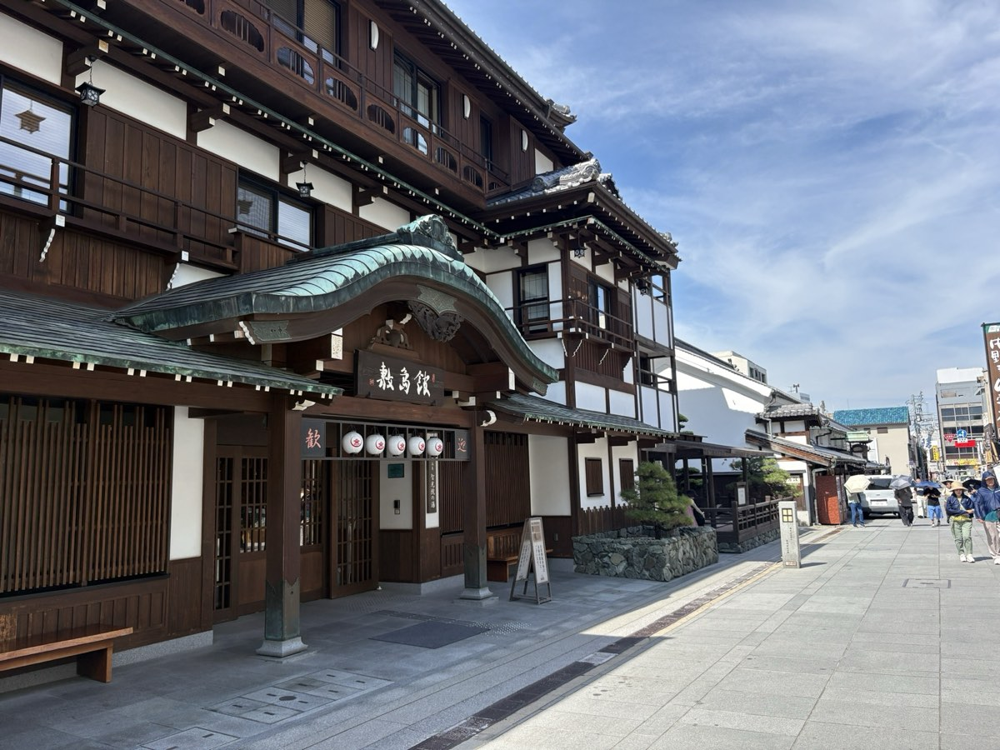

讃岐うどんの名店は、田んぼの中や住宅街など公共交通では行きにくい場所にもあります。空港から無料送迎で店舗へ、そのまま1日で何軒も回れます。
空車と料金を確認する綾川町・坂出市・丸亀市・善通寺市など、駅から離れた場所にある人気店も多く、車があると効率よく回れます。
朝から開いて昼過ぎには閉まる店や、麺がなくなり次第終了の店があります。朝一番に出発できる車が便利です。
小（1玉）なら1日に3〜4軒回る人も。車なら移動時間を短くできます。
こんぴらさん（金刀比羅宮）や栗林公園、屋島など、うどんと観光を1日で組み合わせられます。
| エリア | 所要時間 | 主なお店・見どころ |
|---|---|---|
| 綾川町 | 約20分 | 山越うどん など |
| 高松市中心部 | 約30〜40分 | 市内の人気店、栗林公園、高松港 |
| 琴平町 | 約30〜40分 | こんぴらさん（金刀比羅宮）と参道のうどん店 |
| 坂出市 | 約35〜45分 | がもううどん、日の出製麺所 など |
| 丸亀市・善通寺市 | 約40〜50分 | 丸亀城、長田 in 香の香 など |
時間は道路状況で変わります。各お店の営業日・営業時間は変わることがあるため、出発前にお店の情報をご確認ください。
| クラス | 車種の例 |
|---|---|
| 軽・コンパクト | タント／N-BOX／ハスラー／パッソ |
| コンパクト | ヤリス／アクア／ルーミー／ソリオ |
| コンパクトSUV | ヤリスクロス／ライズ |
| セダン／ハイブリッド | プリウス |
| SUV | ハリアー |
| コンパクトワゴン | シエンタ |
| ミニバン | ヴォクシー／ノア |
| プレミアムミニバン | アルファード／ヴェルファイア |
料金は日付・車種ごとに予約画面に表示されます。車種はクラス内からのご用意で、お選びいただけません。